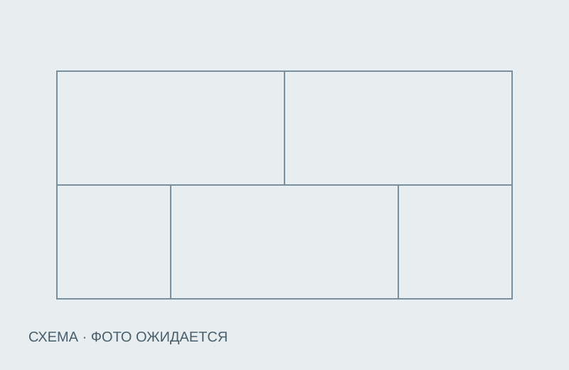
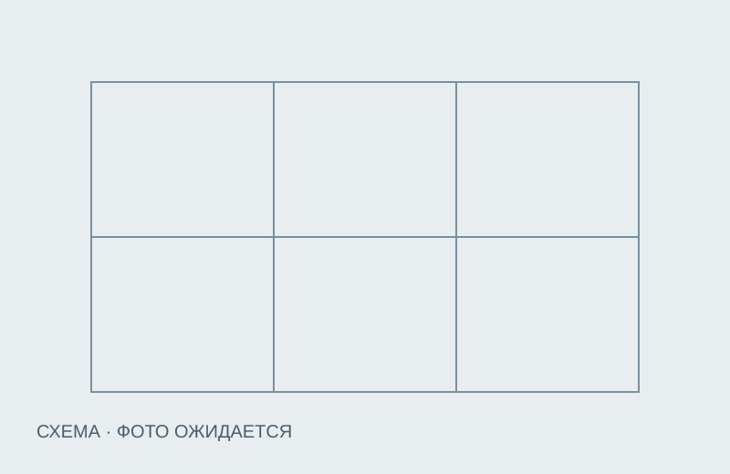

Частный объект · Переделкино
Натуральный камень в Переделкино
В архиве представлены материалы по гидрофобизации натурального камня.
Камень и фасадыПосмотреть проектAVF Repair / инженерное восстановление
Частные дома и коммерческие объекты. Изучаем конструкции, сохраняем пригодные элементы и решаем конкретную задачу.
Отправить фото проблемыАрхив компании: фотографии и технические описания ожидают согласования.
Показано: 6 из 6

Частный объект · Переделкино
В архиве представлены материалы по гидрофобизации натурального камня.
Камень и фасадыПосмотреть проект
ФОК Некрасовка
Материалы по зенитным фонарям спортивного объекта.
ОстеклениеПосмотреть проект
Спортивный объект · Самбо / Бокс
Замена дверной фурнитуры на спортивном объекте.
Дверная фурнитураПосмотреть проектОбъект «Успенская Л.»
Материалы по металлическим ограждениям; состав работ уточняется.
ОгражденияПосмотреть проектЧастный дом · Переделкино
Металлические элементы на частном доме. Детали работ уточняются.
МеталлоконструкцииПосмотреть проектСберСити
Материалы из архива компании по флюгаркам.
МеталлоконструкцииПосмотреть проектОбсудим задачу
Покажите нам проблему. Специалист изучит фотографии и предложит дальнейшие действия.
Демонстрационный режим: данные и фотографии остаются в браузере, заявка не отправляется.
Мессенджер: контакт уточняется